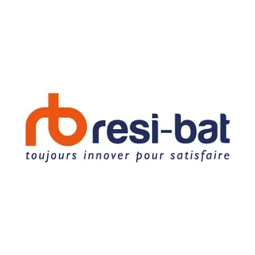
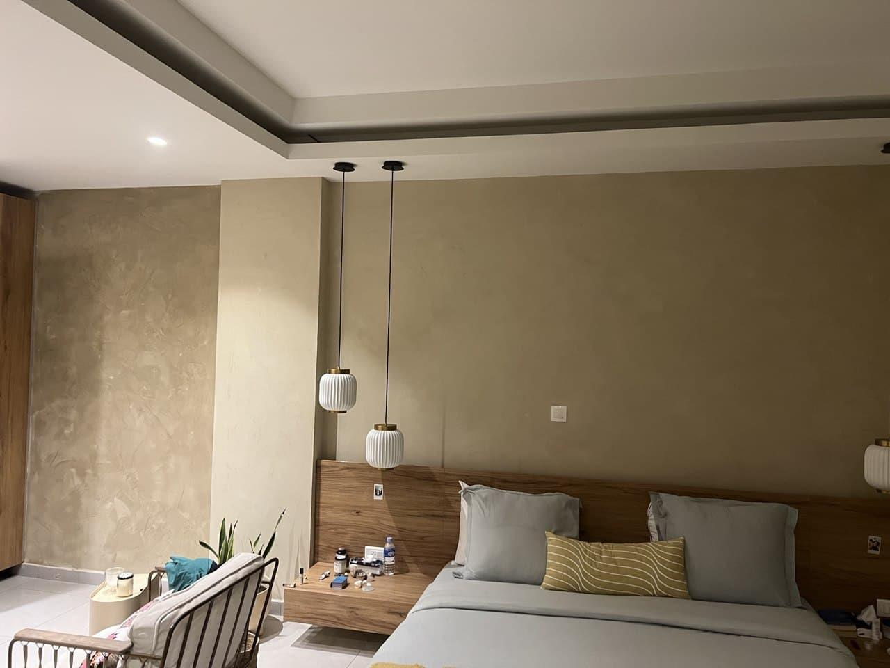
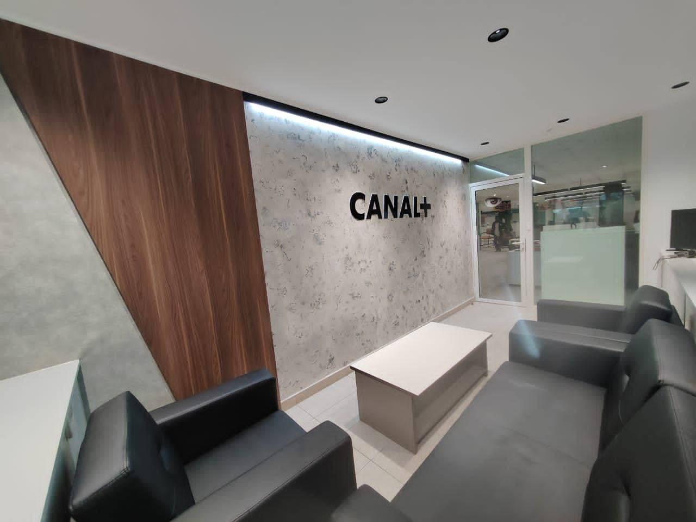
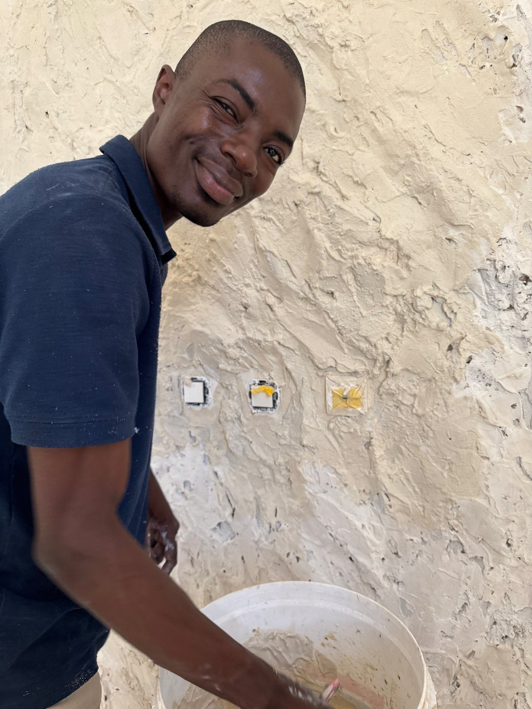
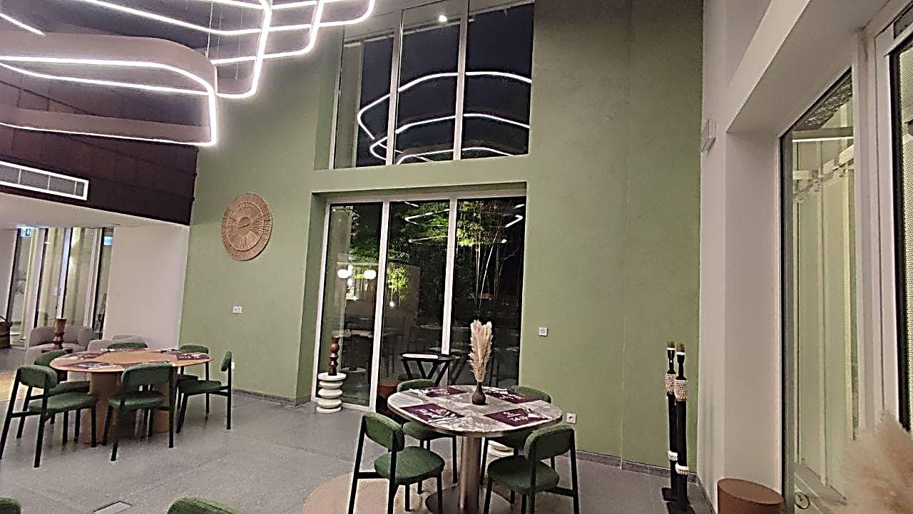
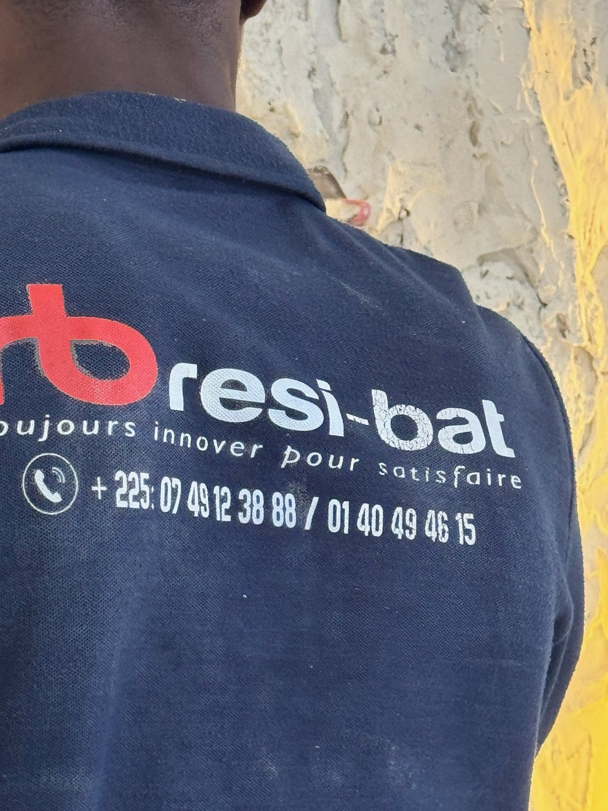
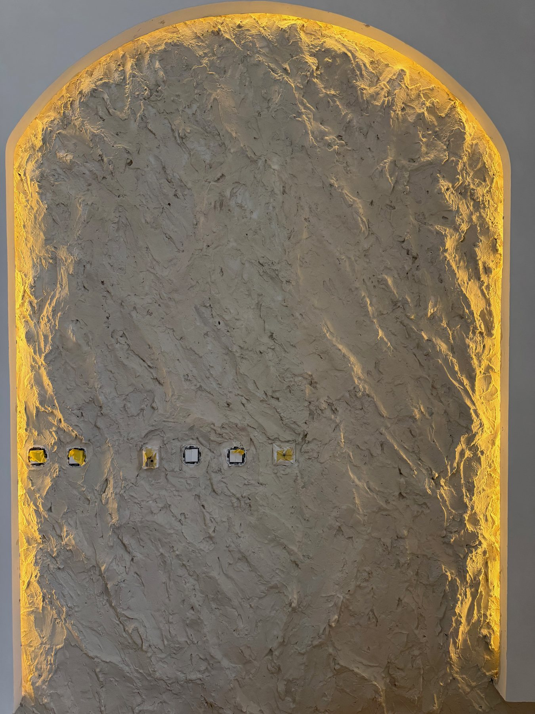

Canal+ Côte d’Ivoire
Stucco effet marbre avec design
Cocody, Mermoz · 2024
Parlons de votre projet ↗L’ART DE TRANSFORMER LES LIEUX
Des murs que l’on regarde.
Des lieux que l’on ressent.
Peinture & finitions décoratives.
Plus de 15 ans de savoir-faire à Abidjan et en Côte d’Ivoire.
15+années de savoir-faire
12chantiers à explorer
44photographies de nos réalisations
04matières signature
01 — L’EXPLORATEUR DE MATIÈRES
Une surface prend vie dans la lumière.
Choisissez une finition et entrez dans le détail de nos réalisations.
CHAUX & POUDRE DE MARBRE
Des nuances subtiles, une matière vivante et une présence douce. Le Marmorino donne du caractère aux murs de vos espaces de vie.

Faites glisser pour révéler un agrandissement de la même photographie.
AU-DELÀ DE LA DÉCORATION
Un beau résultat se prépare. RESI-BAT intervient aussi sur les travaux qui donnent aux finitions toute leur qualité.
Étudions votre projet ↗Intérieurs, façades, murs et plafonds : préparation des surfaces, enduits et application d’une peinture adaptée au chantier.
Béton ciré et finitions décoratives selon le support, l’usage et le rendu souhaité.
Une intervention à définir après examen du support et de l’origine des désordres, pour choisir un traitement adapté.
Protection et mise en valeur des surfaces, avec un produit et un aspect choisis selon leur nature.
LE GESTE DEVIENT UN LIEU

Canal+ Côte d’Ivoire
Cocody, Mermoz · 202402 — LES LIEUX TRANSFORMÉS
12 chantiers, 44 photographies.
Explorez les matières, les détails et les étapes de nos réalisations.
12 chantiers à découvrir
03 — LES RÉFÉRENCES
De la villa au showroom, chaque intervention répond aux usages du lieu et à la finition recherchée.
Stucco effet marbre avec design
Cocody, Mermoz · 2024Pietra Levigata
Marcory, Zone 4 · 2024Pietra Levigata
Cocody · Avril 2025Stucco effet marbre blanc
Treichville, Zone 3 · 2024Rénovation intérieure et extérieure
Cocody, II Plateaux · Décembre 2024Béton ciré sur murs de pièces d’eau
Treichville · 2023Références de chantier présentées dans le portfolio RESI-BAT, édition août 2025.
04 — L’ARTISAN & LE GESTE
Eric Tchere, peintre professionnel en bâtiment. Plus de 15 ans d’expérience au service de vos murs, de vos sols et de vos projets de décoration.

Retrouvez les chantiers, les gestes et les nouvelles finitions sur nos réseaux.
LES GESTES EN VIDÉO · TIKTOK
01 Stucco marbre : la finition ↗02 Préparation : le ponçage ↗03 Le geste du Marmorino ↗


RESI-BAT · Signature animée — 5 secondes
UN PROJET BIEN PRÉPARÉ
Votre ville, quelques photos, les surfaces à traiter et le résultat souhaité.
État des supports, choix des matières, périmètre et devis adapté au chantier.
Préparation, application et vérification des finitions selon les travaux convenus.
LES QUESTIONS PRATIQUES
Oui. RESI-BAT intervient à Abidjan et à l’intérieur de la Côte d’Ivoire. Indiquez la ville et les caractéristiques du chantier lors de notre premier échange.
Décrivez votre projet dans le formulaire ci-dessous, puis ouvrez WhatsApp pour nous envoyer votre demande. Vous pourrez y joindre vos photos. Le devis dépend des surfaces, de leur état et de la finition choisie.
Marmorino, béton ciré, stucco ou Pietra Levigata : le choix dépend de l’effet recherché, du support et de l’usage de la pièce. Nous en discutons à partir de vos envies et des contraintes du lieu.
Oui. Le portfolio comprend des chambres, des villas, des bureaux, des showrooms et des espaces d’accueil professionnels.
05 — VOTRE PROJET COMMENCE ICI
Une pièce à transformer, une façade à rénover,
un projet à préciser ? Parlons-en.